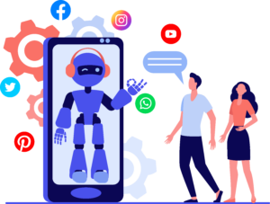

Malicious social media bots can be used for a number of purposes:
Artificially amplifying the popularity of a person or movement
Influencing elections
Manipulating financial markets
Amplify phishing attacks
Spreading spam
Shutting down free speech
What's the difference between a social media bot and a chatbot?
While these terms are sometimes used interchangeably, chatbots are bots that can independently hold a conversation, while social media bots do not have to have that ability. Chatbots are able to respond to user input, but social media bots do not need to "know" how to converse. In fact, many social media bots don't communicate using language at all; they only perform more simple interactions such as providing 'follows' and 'likes'.
Social media bots also exist on a much larger scale than chatbots, because of the level of human management required. A chatbot often requires a person or even a team of people to maintain its functionality. On the other hand, social media bots are much simpler to manage, and oftentimes hundreds or even thousands of social media bots are managed by a single person.

What are social media bots used for?
Some social media bots provide useful services, such as weather updates and sports scores. These 'good' social media bots are clearly identified as such and the people who interact with them know that they are bots. However a large number of social media bots are malicious bots disguised as human users.
Malicious social media bots can be used for a number of purposes:
- Artificially amplifying the popularity of a person or movement: A person or organization with millions of social media followers can be seen as important or influential. A primary use case of social media bots is to boost the apparent popularity of other accounts. These follower bots can be bought and sold on the black market, with more convincing bots fetching a higher price.
- Influencing elections: A study by First Monday, a peer-reviewed journal found that in the day before the 2016 U.S. presidential election, as much as 20% of political discussion on social media was generated by about 400,000 social media bots.
- Manipulating financial markets: Social media bots can also be used to influence financial markets. For example, bot accounts can flood social media with manufactured good or bad news about a corporation, in an attempt to manipulate the direction of stock prices.
- Amplify phishing attacks: Phishing attacks rely on an attacker gaining their victim's confidence. Fake social media followers and social engagement can help convince a victim that their scammer can be trusted.
- Spreading spam: Social media bots are often used for illicit advertising purposes by spamming the social web with links to commercial websites.
- Shutting down free speech: During the 2010-2012 Arab Spring movement, government agencies used Twitter bots to overwhelm social media feeds. These bots were used to deliberately push down the messages of protestors and activists.
How many social media accounts are actually social media bots?
Twitter executives have testified before Congress that as many as 5% of Twitter accounts are operated by bots. Experts who have applied logarithms designed to spot bot behavior have found the number may be closer to 15%. That number likely applies to other social platforms as well.
It's not easy to pinpoint exactly how many social media accounts are bot accounts, since so many of the bots are designed to mimic human accounts. In many cases, humans cannot tell bot accounts apart from legitimate human accounts.
How can you tell a social media bot from a real user?
While some social media bots very obviously exhibit non-human behavior, there is no surefire way to identify more sophisticated bot accounts. A study from the University of Reading School of Systems Engineering found that 30% of people in the study could be deceived into believing a social media bot account was run by a real person.
While some of the most advanced social media bots can be hard to spot even for experts, there are a few strategies to identify some of the less sophisticated bot accounts. These include:
- Running a reverse image search on their profile picture to see if they are using a photo of someone else taken off the web.
- Looking at the timing of their posts. If they are posting at times of day that don't match up with their time zone or are making posts every few minutes every single day, these are indications that the account is automated.
How to stop social media bots
There is no easy way to get rid of malicious social media bots. While some people are calling on social media platforms to apply more stringent requirements for account creation, social platforms are hesitant to do so because:
- This may prevent some legitimate users from signing up, and social media companies use the number of user accounts as a measure of their success.
- For activists and protestors under oppressive regimes, the ability to maintain some anonymity when creating a social media account can be necessary to their survival.
- Since there is no perfect test to determine between bots and real users, stricter requirements for account creations may cause inconvenience to real users while not successfully stopping bots. For example, it's debated whether or not CAPTCHAs are a good deterrent against bots, but they are certainly effective at inconveniencing humans.